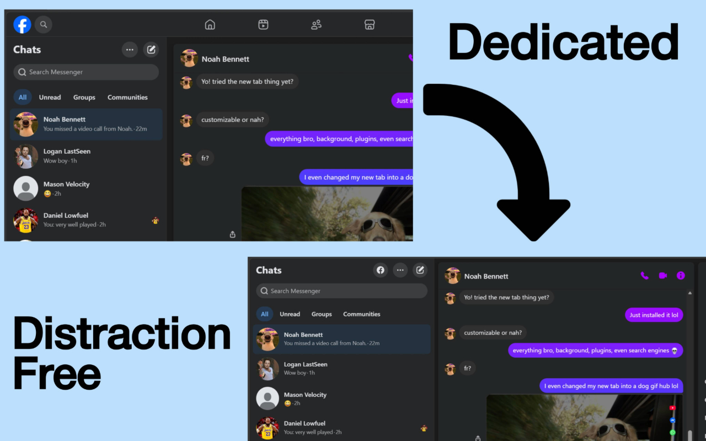
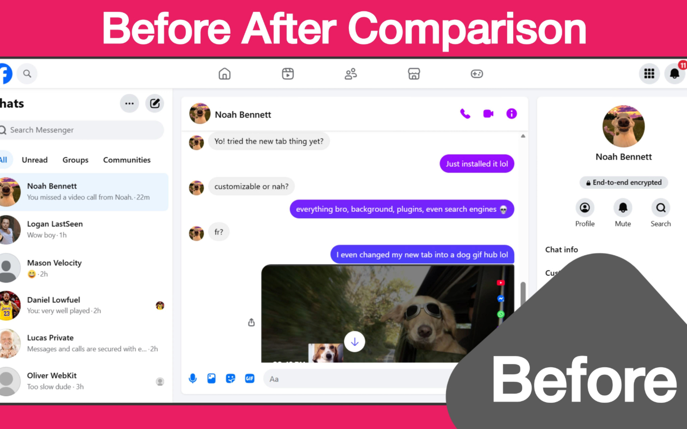
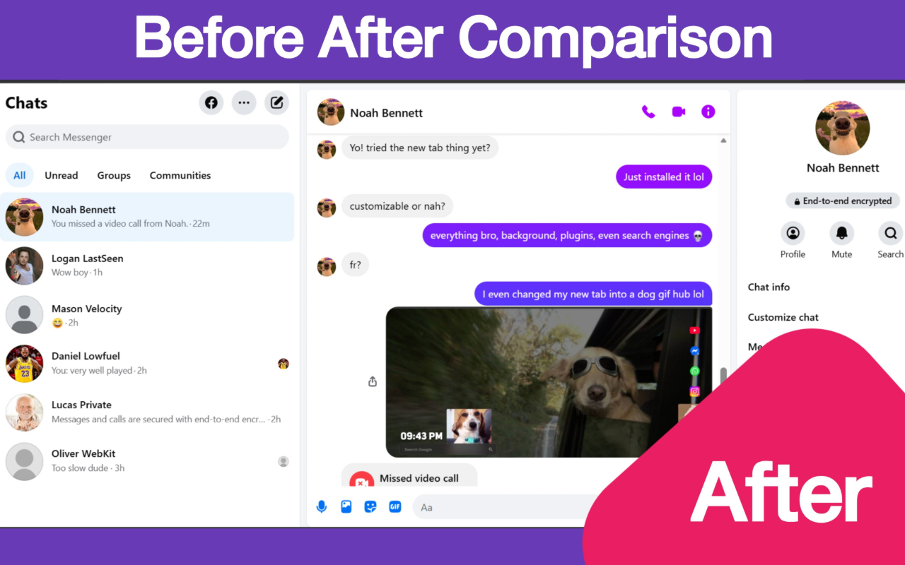
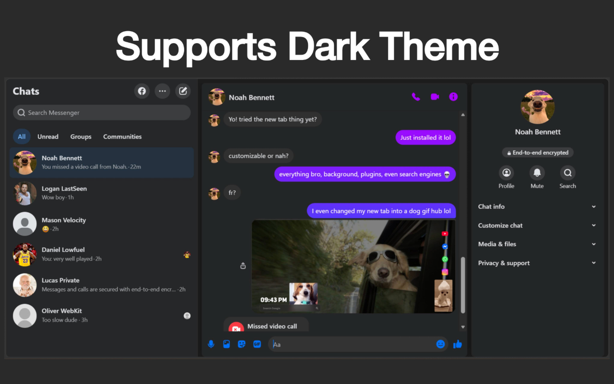

Better Messenger for Facebook™
A browser extension that transforms facebook.com/messages to look, work, and behave like the standalone Messenger web app (messenger.com/t) by removing Facebook’s header and navigation and adding features not available in Facebook™ version of Messenger.
Created in response to the upcoming shutdown of messenger.com to preserve a dedicated chat experience inside Facebook™ like Messenger.

Features
- Removes Facebook header and top navigation from Messages page
- Makes Messenger™ behave like a standalone web app
- Cleaner, distraction-free chat interface
- Additional customization features: OG Messenger™ splash screen, Quick Facebook button at the top left, GIF autoplay, hide scrollbar, adjustable thread width
Purpose
This extension exists to preserve the standalone Messenger™ web experience after the shutdown of messenger.com, keeping messaging focused and separate from the rest of Facebook™.



Installation
Not published yet. Can be installed manually using Developer Mode.
Notes
Works only on facebook.com/messages. Designed for Chromium-based browsers (Chrome, Edge, Brave etc.). Does not modify any Facebook™ API or access any data.